Getting started
From zero to your first useful result.
1. Log in
- Go to claude.ai or install the Claude desktop app.
- Log in with your company email.
- If Claude asks you to choose an organisation, select Taimatsu. Don't choose a personal plan.
- Check the menu (bottom left) shows Taimatsu. If it doesn't, switch to it, or ask the engineering team.
2. Used ChatGPT or another AI before? Bring your memory
Optional. If another AI already knows how you work, you can copy that into Claude so you don't start from zero.
- Open claude.com/import-memory and click Copy prompt.
- Paste that prompt into a chat with your old AI. It will write a summary of what it knows about you.
- Read the summary and delete anything private or not about work (family, health, passwords, customer names).
- Paste the cleaned summary into Claude's memory settings. Make sure you are in the Taimatsu organisation first.
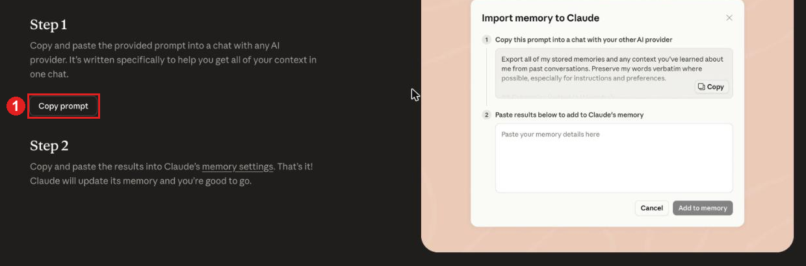
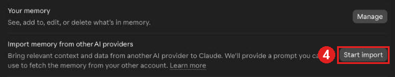
You can see and edit everything Claude remembers in Settings at any time.
3. Your first chat
Type a message in the box and press Enter. Try this:
I just started using Claude at work. Explain in 5 short bullet points what you can help me with as a [your job].
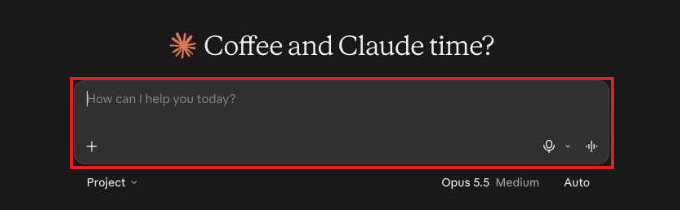
Then reply to the answer. A chat is a conversation: you can say "shorter", "more formal", "in Japanese", or "that's wrong, here's why".
Start a new chat for each new topic. Long chats about many things give worse answers.
4. How to ask good questions
Claude does not know you, your team or your customer. The more context you give, the better the answer.
Weak
Write an email about the delay.
Strong
Write a short, polite email to a business partner. Our delivery will be 3 days late because of a supplier problem. Apologise once, give the new date (12 Dec), and offer a call. Tone: friendly but professional. Max 120 words.
A good prompt usually answers these questions:
- Who is it for? (customer, boss, team, beginner)
- What do you want? (email, table, summary, list of ideas)
- Why? What is the goal or the background?
- How should it look? (length, tone, language, format)
- Example: paste a past example you liked, if you have one.
Not sure how to ask? Ask Claude: Ask me questions until you have enough information to do this well.
5. Files and images
You can drag PDFs, Word, Excel, CSV files and screenshots into the chat, then ask about them:
Summarise this contract in 5 bullet points and list anything unusual.
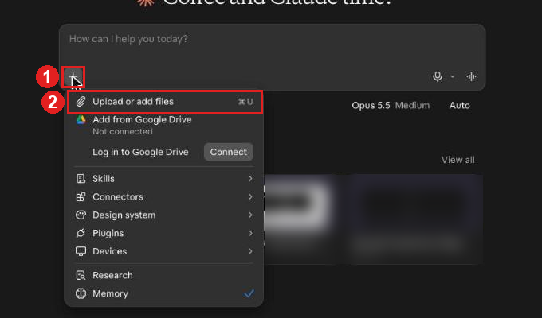
- Click + under the chat box.
- Click Upload or add files and choose the file.
Before you upload, review what to consider before sharing information.
6. Projects
A Project is a folder for chats about the same work. You add files and instructions once, and every chat in the Project can use them. Good for: a team style guide, product info, templates you use every week.
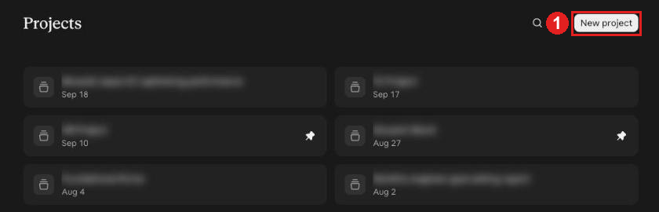
- Open Projects in the left menu and click New project.
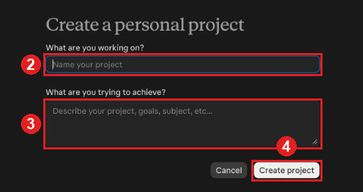
- Give the Project a name.
- Describe what it is for: the goal, the team, the background.
- Click Create project.
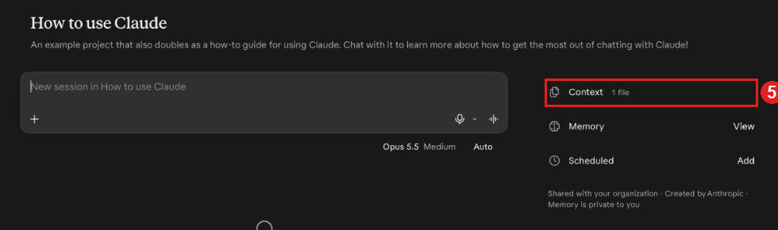
- Open Context to add files every chat in the Project can use.
Example Project instructions:
You help the Creative team write product copy. Always write in a warm, simple style. Japanese first, then English. Never invent product features. Ask if something is unclear.
7. Memory, instructions and skills
Three ways to stop repeating yourself. Claude uses them in every chat, so you explain things once.
Memory: what Claude remembers about you
Claude can remember useful facts from your chats, like your job, your team and how you like answers written. You can also tell it directly:
Remember that I work in the Kyoto office and write to customers in Japanese and English.
- See, edit or delete everything Claude remembers in Settings → Your Claude → Memory.
- Only work facts. Never ask Claude to remember passwords, customer details or private information.
- If an answer uses something old or wrong, tell Claude:
Forget that. It's now ...
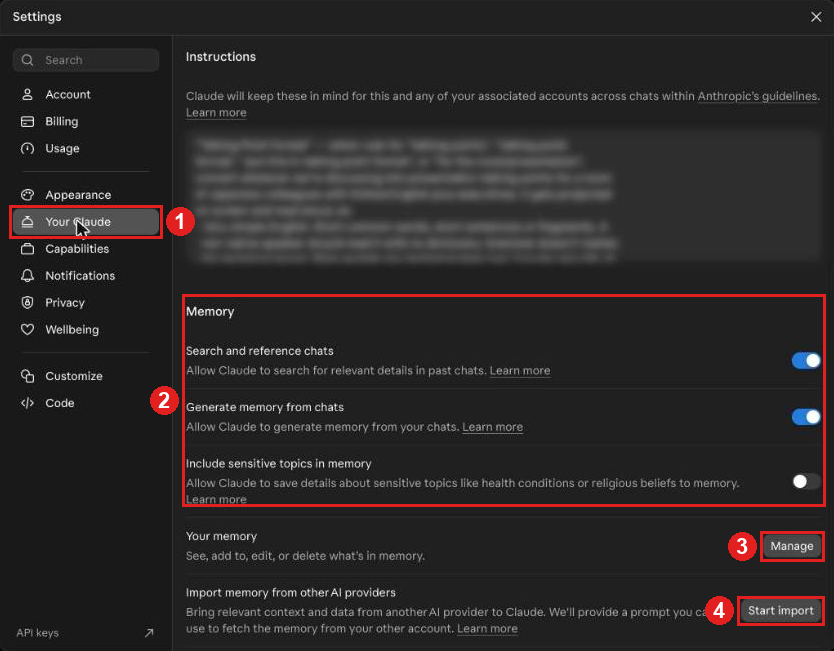
- Open Settings → Your Claude.
- Memory switches: Claude remembers from your chats.
- Manage: see, edit or delete what Claude remembers.
- Start import: bring memory from another AI (section 2).
Instructions (.md files): your standing rules
Instructions are rules Claude follows every time, written once. You will often see them saved as .md files (Markdown). It is just a plain text file with simple headings, and Claude reads it very well.
- For you: Settings → Your Claude → Instructions. Write how you like answers (language, length, tone).
- For a team or task: Project instructions (see section 6), or a .md file added to the Project.
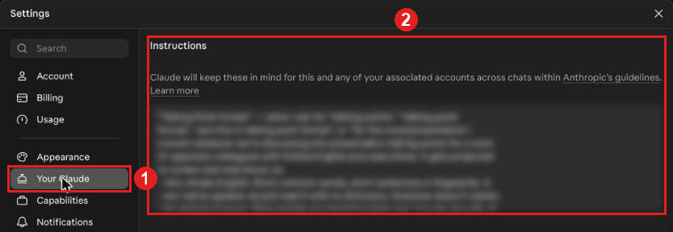
- Open Settings → Your Claude.
- Write your personal rules in Instructions.
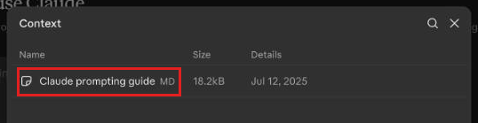
Example .md file for a team:
# Customer support style - Japanese first, then English. - Polite, short sentences. Max 150 words. - Never promise refunds or dates. Ask the team lead first. - Sign off as "TAIMATSU Customer Support".
Keep instructions short and clear. If Claude keeps making the same mistake, add one line to the instructions instead of correcting it in every chat.
Skills: ready-made know-how
A skill is a saved package of instructions (and sometimes templates) for one kind of task, like making slides, writing a monthly report in the company format, or checking a contract. Claude uses the skill on its own when your request matches it.
- Find them in Settings → Customize → Skills. Some skills come built in (for example Word, Excel and PowerPoint files).
- A skill is a folder with a SKILL.md file inside: a name, when to use it, and the steps to follow.
- Only add skills from the company or the engineering team. A skill from the internet can tell Claude to do things you did not ask for, just like an unsafe connector.
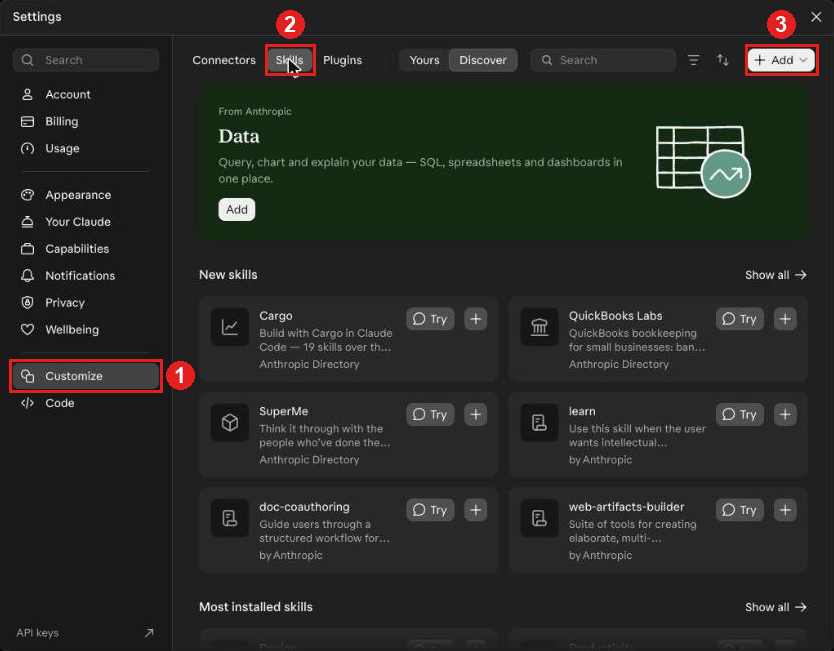
- Open Settings → Customize.
- Click Skills to see your skills and the skill directory.
- Add: only for skills from the company or the engineering team.
Doing the same task every week? Tell Claude:
I write this report every Monday. Help me turn how we do it into a skill.
8. Artifacts
When Claude makes something bigger, like a document, a table or a small web page, it can open it in a side panel called an Artifact. You can edit it, copy it, or download it.
9. Connectors
Connectors let Claude read or act in other tools, like Google Drive, Gmail or Slack. They are powerful but come with extra risk. Check what access a connection needs, and always check what Claude wants to do before you click Allow. Before connecting, read Connecting email, files, and other tools on the Security page.
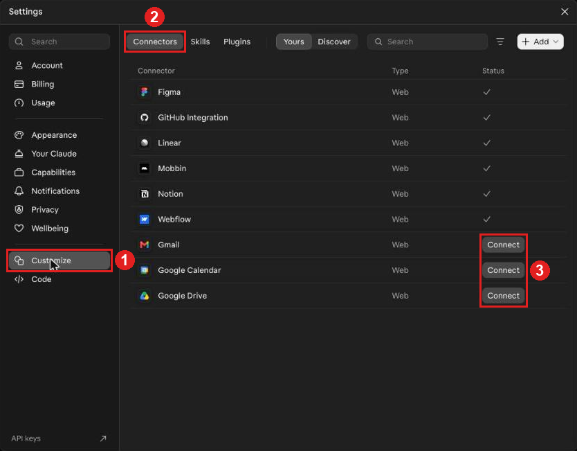
- Open Settings → Customize.
- Click Connectors to see what is connected.
- Connect: check the provider and requested access before connecting.
Practice
- Ask Claude to rewrite a real email you sent last week (remove personal data first).
- Upload a public document and ask for a 5-line summary.
- Ask a question you already know the answer to, and see if Claude gets it right.